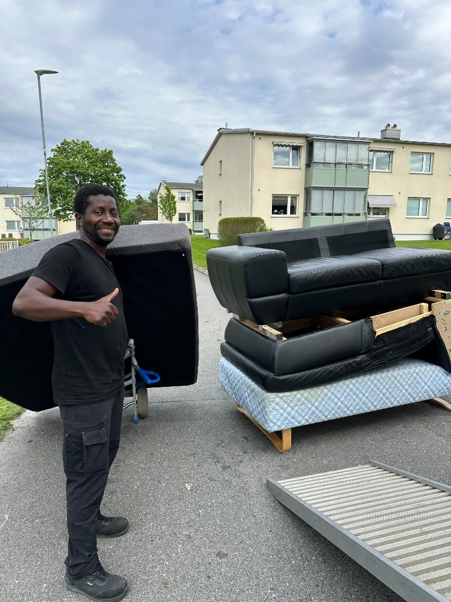
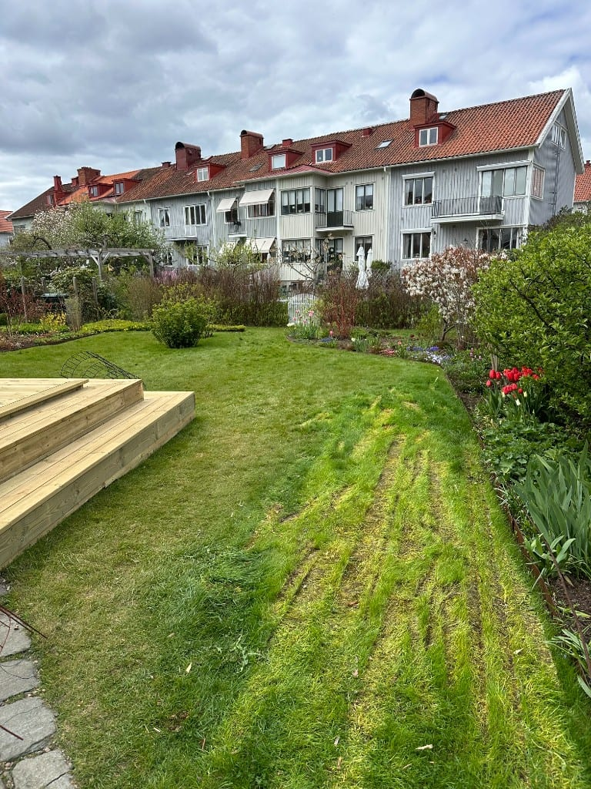
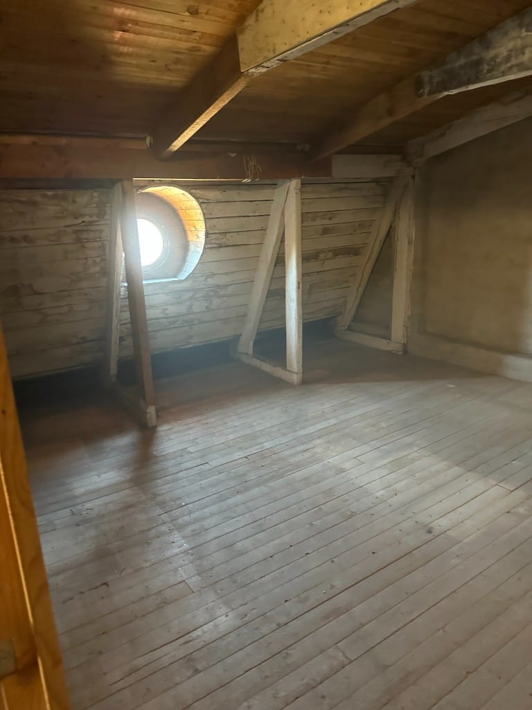
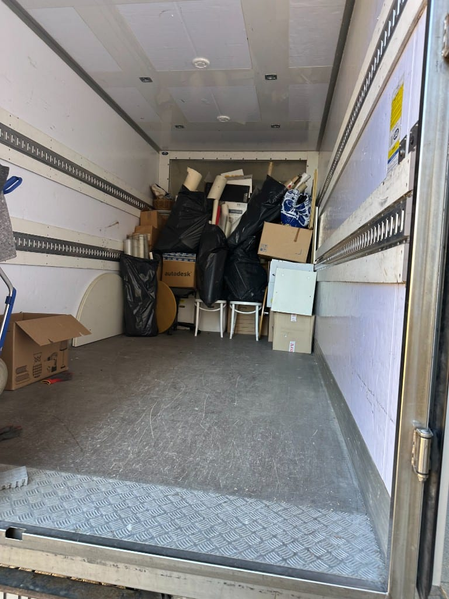
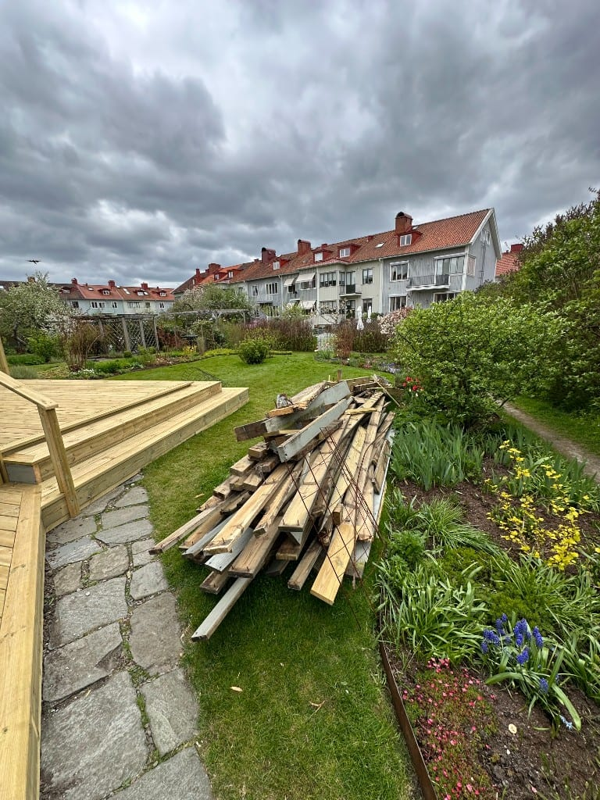

Flytt & försäljning
Töm hela radhuset inför ny ägare eller hyresgäst.
Tjänst · Göteborg
Radhusområden kan innebära utmaningar med parkering, smala gångvägar och flera våningsplan. Vi har fordonen och personalen för en effektiv radhustömning.
Översikt
Radhus kombinerar ofta flera våningsplan med begränsade parkeringsmöjligheter och delade gångytor. Det kräver planering så att grannar inte störs och inget skadas under transport.
Vi hjälper vid flytt, försäljning, dödsbo och renovering. Fast offert efter besiktning – sortering och miljövänlig bortforsling ingår.
Vid radhustömning ingår ofta även garage- och källarutrymmen och förråd. Vi sköter bortforslingen miljövänligt – se hur priset sätts eller begär offert direkt.

Tjänster
Vanliga situationer vi hanterar i radhusområden runt Göteborg.

Töm hela radhuset inför ny ägare eller hyresgäst.

Rensa källarförråd, garage och vind i samma uppdrag.
Läs mer
Varsam radhustömning med respekt för anhöriga.
Läs mer
Töm ytor innan ombyggnad – byggavfall och bohag bortforslas.
Process
Transparent och strukturerad process – du vet alltid vad som händer härnäst.
Vi tittar på volym, parkering och bärvägar – fast pris innan start.
Ytor skyddas, material sorteras för återbruk och återvinning.
Effektiv utbärning och lastning med rätt fordon för området.
Situationer
Tom bostad inför visning och tillträde.
Snabb tömning när ny uthyrning ska ske.
Transparent prissättning
Offert baserad på volym och tillgänglighet – inga överraskningar.
Begär offertTrygg partner
Vi är göteborgare som förstår Göteborg. Med över 14 års erfarenhet, hundratals avklarade tömningar och hög kundnöjdhet erbjuder vi en komplett lösning – från tömning till återvinning. Vi är fullt ansvarsförsäkrade och har jour dygnet runt vid akuta behov.
Hela kedjan
En miljövänlig process där inget lämnas åt slumpen – transport och sluthantering ingår.
Sortering på plats
Säker lastning
Certifierad mottagning
Slutlig hantering
FAQ
Vi planerar alltid parkering och bärvägar i förväg – erfarenhet från radhusområden i hela regionen.
Ja, vi hanterar hela radhuset inklusive källare, vind och garage.
Mer hjälp
Områden
Få en kostnadsfri offert inom 1–5 minuter. Inga dolda avgifter.